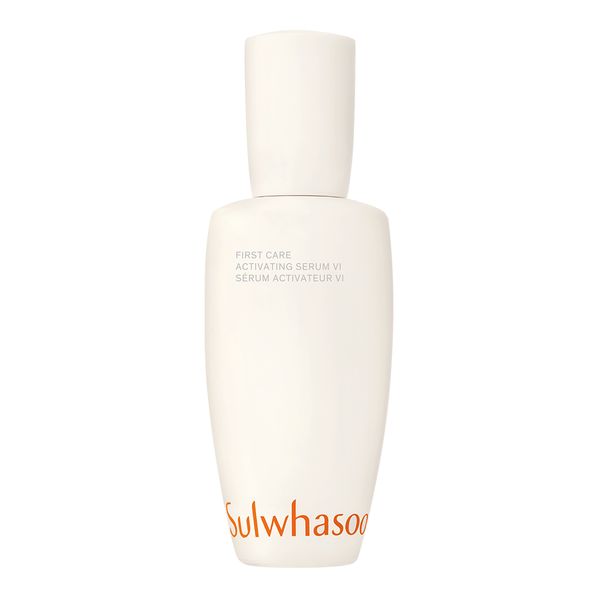
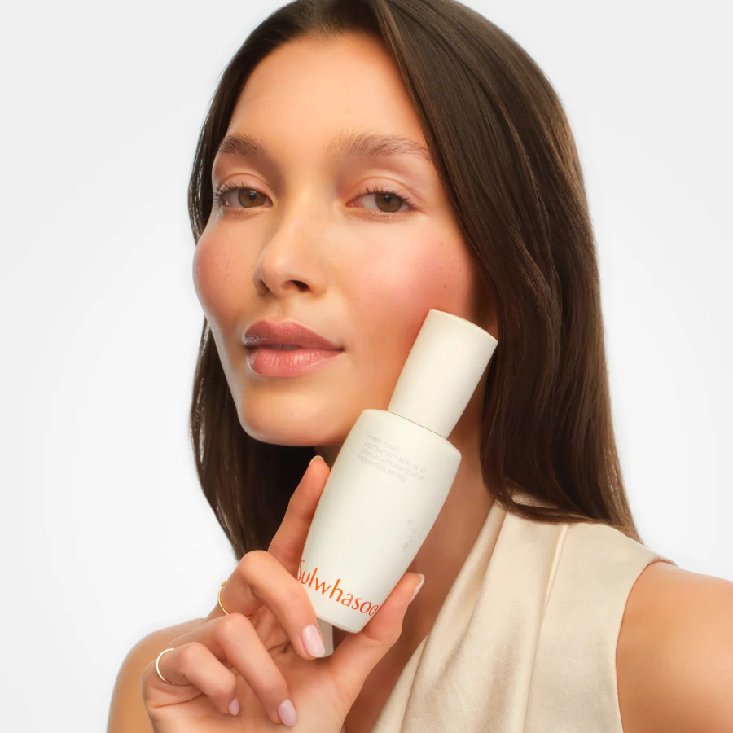
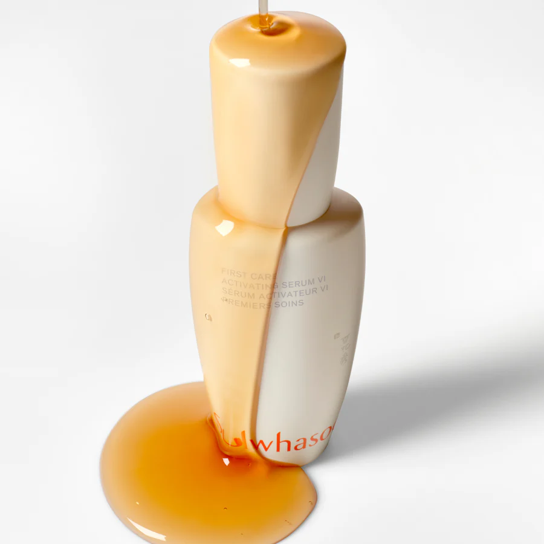
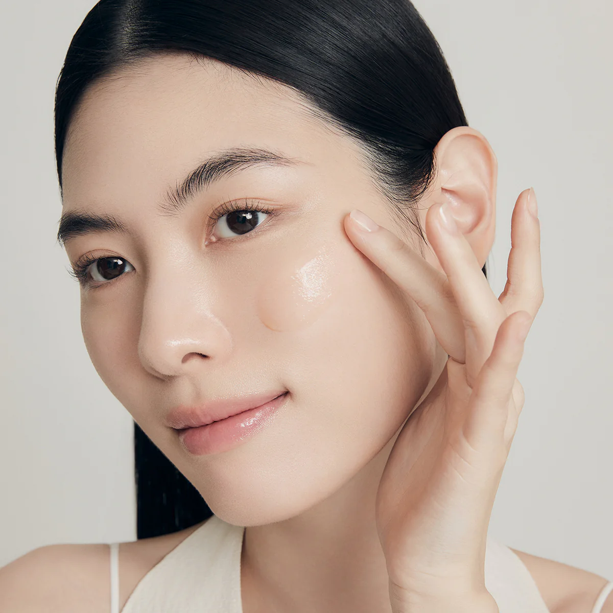
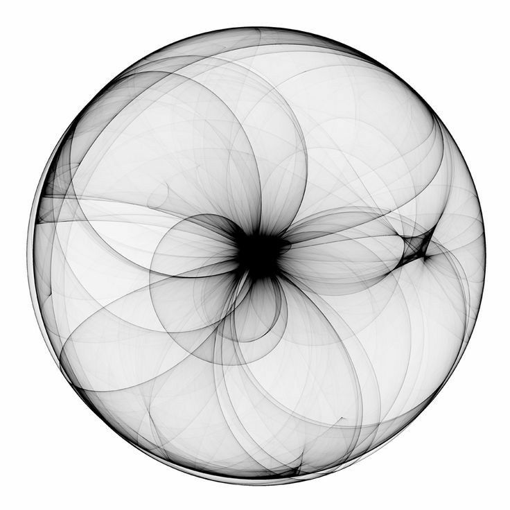
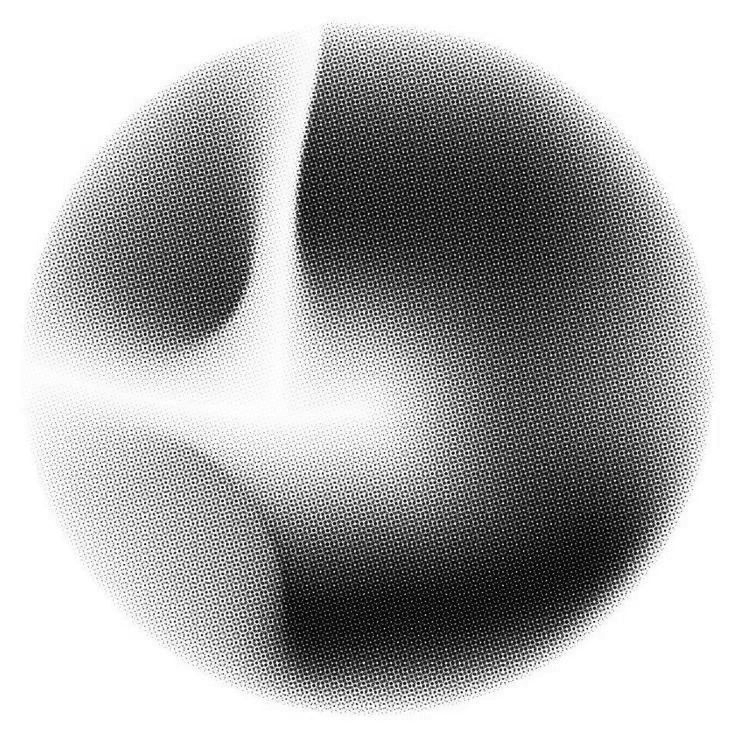
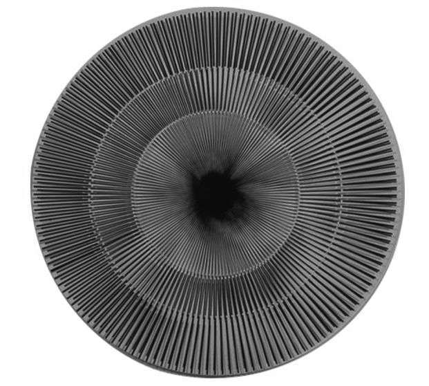

01
ONE BOTTLE SOLD
EVERY 10 SECONDS2
$89.00
(2.02 fl. oz. / 60 mL)
$89.00
(2.02 fl. oz. / 60 mL)

First Care
Activating Serum VI
Visibly healthy, youthful-looking skin NOW AND OVER TIME


01
ONE BOTTLE SOLD
EVERY 10 SECONDS2
02
OVER520,000CUSTOMERS
HAVE USED MORE THAN 10 BOTTLES EACH
03
SUIWHASOO'S
BEST SELLER
NO.1
ANTI-AGING SERUM
IN KOREA
AFTER USING 1 BOTTLE
VISIBLE IMPROVEMENT
IN 5 MAJOR SIGNS OF AGING
JAUM Activator Formulated with Solomon's Seal, Peony, Lotus, White Lily, and Rehmannia as the five key ingredients, Sulwhasoo's patented JAUM ACTIVATOR™ activates skin's natural power to fortify the skin barrier.

DEEP AND RAPID ABSORPTION
FOR DEFENSE AGAINST AGING SKIN
The First Care Activating Serum features a skin-friendly formula that swiftly and deeply absorbs upon application, delivering immediate hydration to distressed skin and safeguarding its essential elements.
Morning and night, after cleansing, awaken your senses with First Care Activating Serum VI.
SIGNATURE FIRST PEACE RITUAL
Warm 2–3 pumps of First Care Activating Serum to the palm of your hands. Cup hands and slowly bring them up to the face. Take a deep breath and inhale the earthy scent.
Begin applying serum in circular motions.
Using the palm of your hands, gently press the serum to cheeks, forehead, around the eyes, and chin until completely absorbed. Wrap your face with both hands to complete the ritual.
CUSTOMER
REVIEWS
The cream is light and carries a really strong ginseng scent. I always look forward to my daily skincare routine because Sulwhasoo products are excellent and therapeutic. I always wake up with bright skin after I use it.


"I love all of their products. It's done amazing things for my skin!"

I love how gentle the scent is. This moisturizer is rich and creamy but doesn't leave my skin oily. I love how long lasting it is and notice the plump in my skin after a few days.

"Fabulous! Love it and how it feels!"